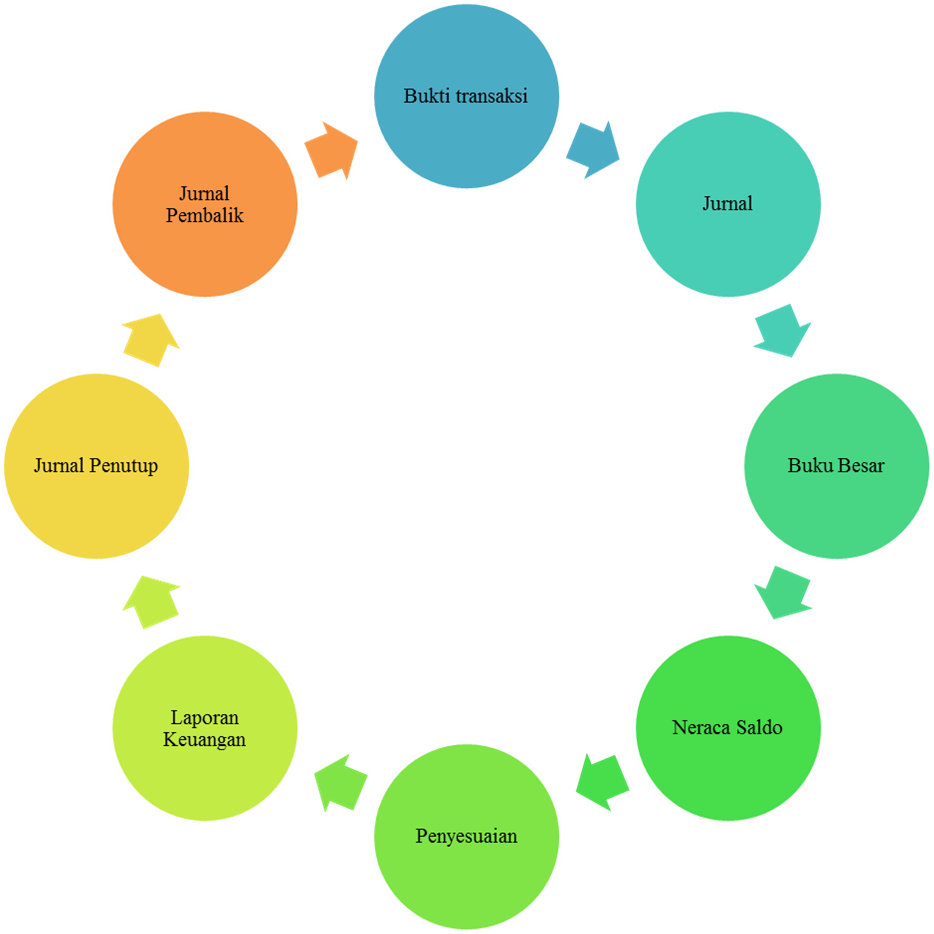

Apa yang dimaksud dengan akuntansi ?
Akuntansi adalah proses sistemantis untuk mengolah transaksi menjadi laporan keuangan yang bermanfaat bagi para penggunanya (Sony Warsono, 2009). Akuntansi digunakan oleh perusahaan untuk menghasilkan informasi keuangan dalam wujud laporan keuangan.
Bagaimanakah siklus akuntansi hingga menjadi laporan keuangan?
Transaksi yang dilakukan oleh perusahaan dapat bersifat tunai maupun non tunai (kredit). Akuntansi digunakan untuk mengelola atau mengolah transaksi-transaksi tersebut agar menghasilkan informasi yang berguna bagi pihak-pihak yang terkait dengan perusahaan. Pihak-pihakpemakai informasi akuntansi antara lain adalah: investor, bank pemberi pinjaman, lembaga pemerintah, manajemen, karyawan, dan serikat pekerja.